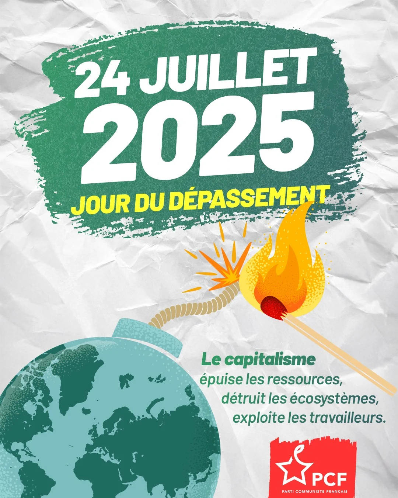

Prise de position
Jour du dépassement. La Terre et le travail épuisés
Date indiquée par Facebook · 24 juillet 2025
Repères éditoriaux
L’affiche du 24 juillet 2025 s’appuie sur une citation de Karl Marx pour relier la surexploitation de la nature et celle du travail.
Texte conservé avec la publication
24 JUILLET 2025 JOUR DU DÉPASSEMENT
"La production capitaliste ne développe la technique […] qu’en épuisant en même temps les deux sources d’où jaillit toute richesse : la Terre et le travailleur".
Karl Marx, Le Capital, Livre I, 1867

Sources
Archive rouge · export Facebook · AR-0002-FB-01056
À lire aussi · Canicule : la chaleur est politique !